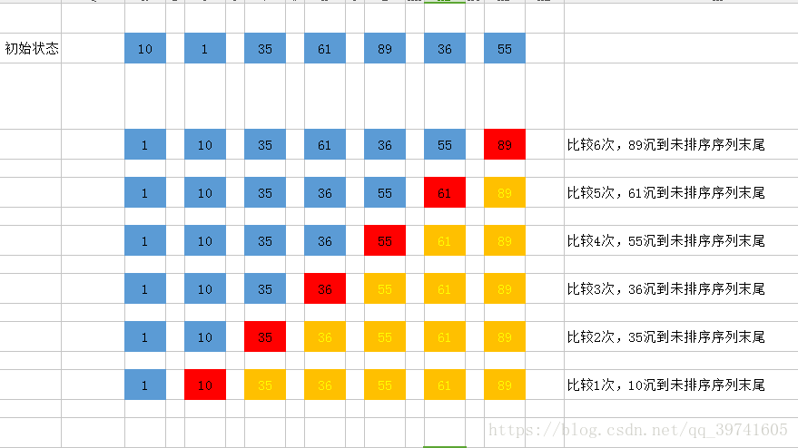
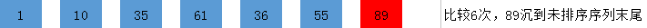

排序算法：即把一串无序数列，按照从大到小或者从小到大的规则进行排列。
- 数组：C语言数组可理解为多个连续相同变量的集合。
- 定义方法如下：
1 | int num[10]; //长度为10的整数数组，即10个int变量的集合 |
读与写：
注意C语言习惯从0开始，数组下标（中括号中的数字称为下标）规定以0开始，因此开10个长度的数组，最大只能访问到下标9，如下面使用：
1
2
3
4int num[10];
num[9]=2; //accept
num[10]=1; //error，数组越界
printf("%d",num[10]); //error即定义时的num[10]中的10表示的是长度，要与之后的使用相区别，10个长度的数组对应的变量为
num[0],num[1],...,num[9]共10个。下面是几种初始化方法：
1
2
3
4
5
6
7
8int num[10]={1,2,3,4,5,6,7,8,9,10}; //初始化
//num[0]~num[9]分别对应 1～10
int n[10]={0}; //初始化，全为0
char str[20]="hello!"; //初始化，字符串，一个一个字符赋值
//str[0]~str[6]分别对应 'h''e''l''l''o''!''\0',最后一个为字符串结束符号
//因此20长度的char数组只能存长度为19的字符串对数组的读与写：
1
2
3
4
5
6
7
8
9
10
11int num[10]={1,2,3,4,5,6,7,8,9,10};
char str[20]="hello!";
//read
int b=num[3]; //b=4
printf("%d %d",num[9],b); //output: 10 4
//write
num[4]=99;
str[0]='H';
printf("%c %d %s",str[0],num[4],str);//output: H 99 Hello!
排序算法（这里介绍冒泡排序）
前面提及的数组，为的就是存进一串无序数，并在数组中对其进行排序
原理：比较两个相邻的元素，将值大的元素交换到右边
思路：依次比较相邻的两个数，将比较小的数放在前面，比较大的数放在后面。
1.第一次比较：首先比较第一和第二个数，将小数放在前面，将大数放在后面。
2.比较第2和第3个数，将小数 放在前面，大数放在后面。
……
3.如此继续，知道比较到最后的两个数，将小数放在前面，大数放在后面，重复步骤，直至全部排序完成
4.在上面一趟比较完成后，最后一个数一定是数组中最大的一个数，所以在比较第二趟的时候，最后一个数是不参加比较的。
5.在第二趟比较完成后，倒数第二个数也一定是数组中倒数第二大数，所以在第三趟的比较中，最后两个数是不参与比较的。
6.依次类推，每一趟比较次数减少依次
下面先上代码：
1 |
|
假设输入：
1 | 7 |
执行过程：
- 要排序数组:[10,1,35,61,89,36,55]

- 第一趟排序：
第一次排序：10和1比较，10大于1，交换位置 [1,10,35,61,89,36,55]
第二次排序：10和35比较，10小于35，不交换位置 [1,10,35,61,89,36,55]
第三次排序：35和61比较，35小于61，不交换位置 [1,10,35,61,89,36,55]
第四次排序：61和89比较，61小于89，不交换位置 [1,10,35,61,89,36,55]
第五次排序：89和36比较，89大于36，交换位置 [1,10,35,61,36,89,55]
第六次排序：89和55比较，89大于55，交换位置 [1,10,35,61,36,55,89]
第一趟总共进行了六次比较，排序结果：[1,10,35,61,36,55,89]

- 第二趟排序：
第一次排序：1和10比较，1小于10，不交换位置 1,10,35,61,36,55,89
第二次排序：10和35比较，10小于35，不交换位置 1,10,35,61,36,55,89
第三次排序：35和61比较，35小于61，不交换位置 1,10,35,61,36,55,89
第四次排序：61和36比较，61大于36，交换位置 1,10,35,36,61,55,89
第五次排序：61和55比较，61大于55，交换位置 1,10,35,36,55,61,89
第二趟总共进行了5次比较，排序结果：1,10,35,36,55,61,89
4. 第三趟排序：
第一次排序：1和10比较，1小于10，不交换位置 1,10,35,36,55,61,89
第二次排序：10和35比较，10小于35，不交换位置 1,10,35,36,55,61,89
第三次排序：35和36比较，35小于36，不交换位置 1,10,35,36,55,61,89
第四次排序：36和61比较，36小于61，不交换位置 1,10,35,36,55,61,89
第三趟总共进行了4次比较，排序结果：1,10,35,36,55,61,89
……
第六趟排序结束，可保证7个数有序
Break and Continue
循环语句中的特殊使用
- break：循环中执行该语句后将直接跳出循环，如：
1 |
|
- continue：循环中执行该语句将放弃执行循环体中该continue语句后的指令，走下一个循环（还是需要按循环要求判断条件）
1 |
|
- switch中的break是离开当前switch循环语句的作用，一般需加上，否则将进入下一个case语句，如：
1 | switch(x) { |
假设
x=1，则程序跳转到开始执行case 1的代码，若case1结束没有break，则将继续执行case2，一直执行下去，直到遇到break或者结束
If you like this blog or find it useful for you, you are welcome to comment on it. You are also welcome to share this blog, so that more people can participate in it. If the images used in the blog infringe your copyright, please contact the author to delete them. Thank you !